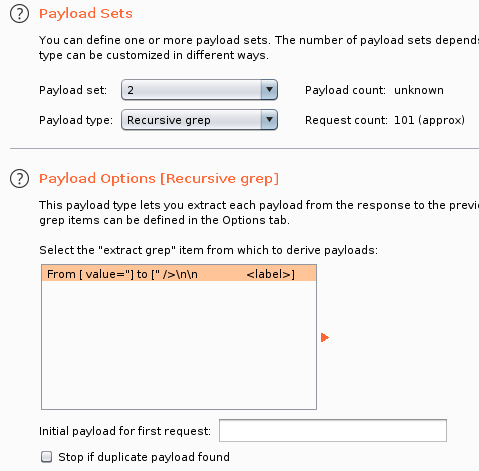

[NOTE] Burp Suite进阶
前言
目前只是些平时练习过程中接触到的BP进阶使用方法和技巧
后续再考虑找些专门的教程学学
使用宏抓取页面token
下面以抓取pikachu靶场爆破模块的token为例
来自于g0tmi1k的文章
首先添加会话处理规则（Session Handling Rules）：Project options/Options -> Sessions -> Session Handling Rules -> Add

这里定义的规则可以让Burp Suite在每次作出请求前
都检视下规定范围内（工具、URL和参数等）是否有对应的适用规则
defined scope for particular tools, URLs or parameters
输入规则描述，并选择规则行为为“Run a macro”（执行宏，因为要替换token）：Details -> Rule Action -> Add -> Run a macro

这种规则会通过运行宏或发送一连串定义好的请求
并基于宏的运行结果或请求的返回，自定义地更新参数或cookies
选择新建一个宏：Add

然后选择想要运行宏的请求包：

这里可以过滤出想要的请求包
要注意的是，记录宏会要求使用正在代理的浏览器，因此此时应该关闭拦截
然后进一步编辑这个宏：Macro description处可以填入这个宏的说明信息
点击Configure item可以对某一选中的请求包进行宏操作编辑

可以对宏如何操作该请求包的cookie和参数等进行编辑
由于我们需要从每次响应中获取token
因此应该自定义一个响应参数：Custom parameter locations in response->Add

之后就是从请求包的响应中定义/提取我们要的参数的匹配模式/匹配位置：Parameter name中填入这个参数的参数名（任意填，可以是“fish”==，不和要替换的请求参数匹配？==）【注意】这个参数名应当和我们想要替换的请求参数名相同，这样后续才能成功匹配上要替换/操作的请求参数Start after expression/End at delimiter中填入参数值的左右界限，建议自己从响应中拖拽选中，这样Burp Suite会自动填入这两个字段

之后一路OK，回到会话处理规则的宏操作定义处
- 这样我们就定义了一个会话处理规则
- 这个规则会执行一个宏操作
- 这个宏操作会对我们选定的请求的响应中提取一个token值
- 并把这个值存在自定义名字的参数中
最后勾选“允许URL不匹配”：
勾选Tolerate URL mismatch when matching parameters (use for URL-agnostic CSRF tokens)

最上面选中的是我们刚定义好的宏操作，作用是提取token的值
==下面一个箭头指向，才是应用把token值替换到我们每次请求的token是把所有参数（即username、password、token甚至加上submit）都作指定的操作——更新/替换==
再下面一个箭头指向，应该是起更新cookie的作用
之后选择该规则的监视目标以及使用范围：Scope->Tools Scope->仅勾选Intruder（因为我们只在爆破里用）URL Scope->Use suite scope [defined in Target tab]（选择使用Burp Suite的监视窗，但理论上也能Use custom scope，指定到Pikachu指定的页面就经检验确实，🆗）
之后将目标站点放到Burp Suite的监视窗里（由于上述的选择）：Target->Site map->{目标站点}->Add to scope
之后可能会弹出一个提示窗，提示说什么“要不要停止记录监视窗口之外的站点的代理记录”之类的，随便选

这样，Burp Suite的监视窗口就会多出我们的靶机站点：

之后正常执行爆破，集束炸弹模式，线程正常设置，注意token参数不要设置payload，因为宏操作会自动完成替换：

爆破正常完成，且每个请求的token值都是被替换的：

因为我们定义了一个会话操作规则，会对选定监视窗口内的每个站点在指定的操作范围内进行检视，若有匹配的站点和适用范围，则应用上相应的规则
这里我们的规则是在爆破处理中运行一个宏，这个宏会在每次请求前都把token值替换成请求响应中给出的新值
这样Burp Suite就完成了自动化更新token并进行爆破的功能，绕过了站点对爆破攻击的弱防御。
==剩下的疑问就是，这个宏操作到底是怎么把每次提取的token值匹配到每次请求的token参数上去的？？建议额外进阶学习Burp Suite的高阶用法==
关于Intruder里面的一些爆破模式
Pitchfork——草叉模式
这个是一次发送一组payload
例如有n个爆破字典，则会每次都使用各自的第i个字符串作为一个payload组合
爆破运行次数是条目数最少的字典
一个使用草叉模式爆破绕token的例子
（单用户爆破）
来自于这里
设置模式为“Pitchfork”（草叉模式），设定如下变量：

可以看到，用户名不作爆破
从响应包中抓取token的匹配值：

然后第二个payload，选择类型为“Recursive grep”，再选择刚提取的token变量：
然后注意爆破线程只能设置为1，因为要使用到提取的token值是单次传递的：

由于没有对用户名字段进行爆破，所以最后爆破结果仅针对admin：